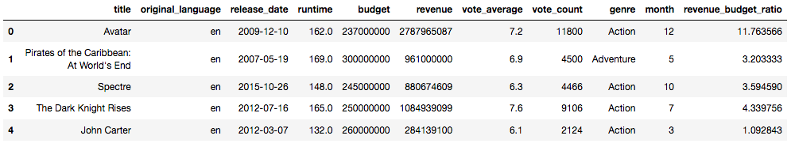
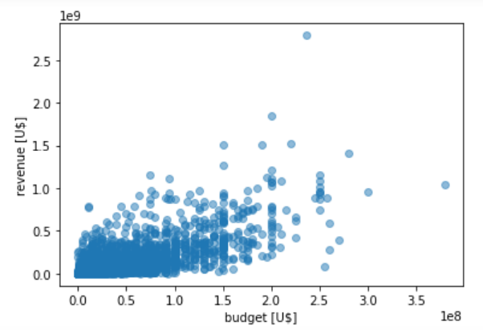
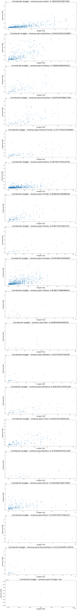
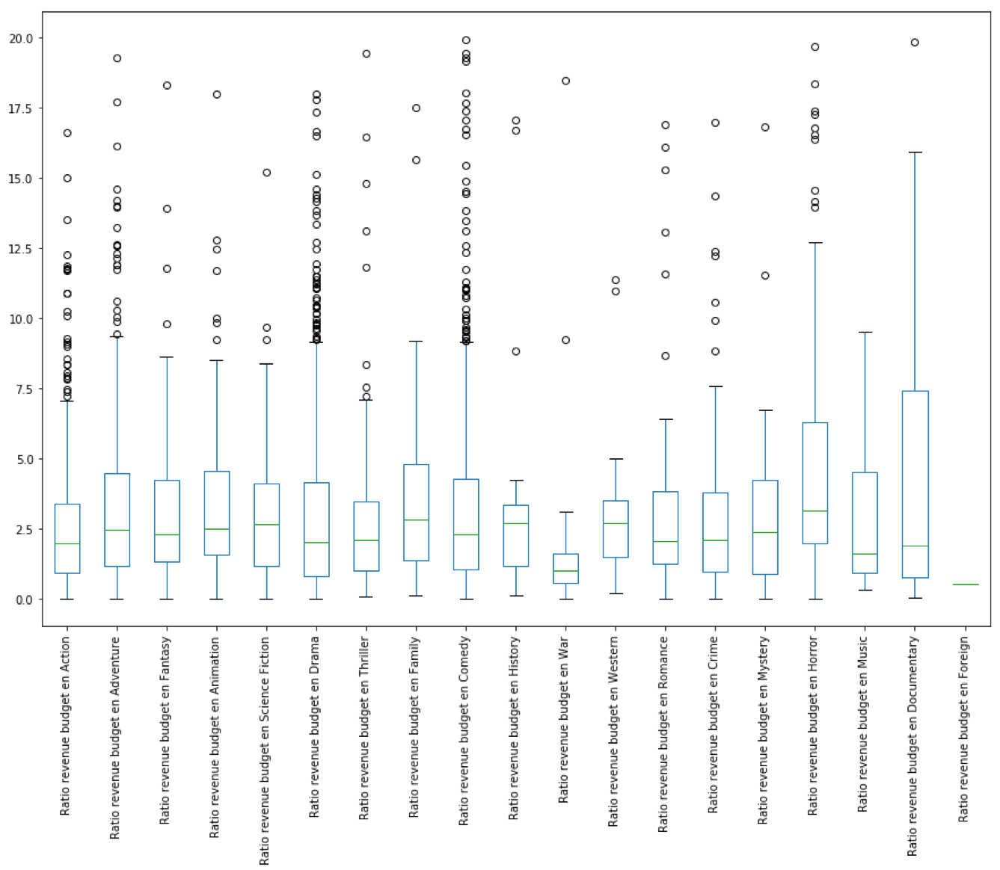
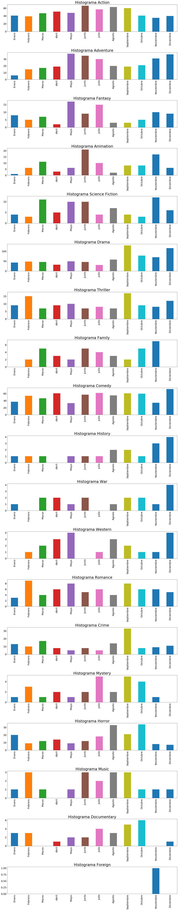

Reporte de datos
Vista preliminar de la fuente de datos (nota: el campo revenue_budget_ratio es generado y corresponde a la división entre revenue y budget).

Análisis de correlación Budget - Revenue (general)

Análisis de correlación Budget - Revenue (por género)

Análisis revenue_budget_ratio por género

Histograma de mes de lanzamiento por tipo de película

Campo vote_average
Media: 7.11
Desviación estándar: 0.72
Criterio de cantidad de desviaciones para outliers: 1.5